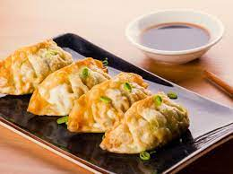

Apa Itu Makanan Gyoza
Hari Ini Saya Ingin Memberi Tahu apa Itu Gyoza

Gyoza adalah pangsit mini yang berasal dari Cina. Gyoza biasanya terbuat dati campuran sayur yang sudah dicincang, seperti bawang putih, kubis, dan kucai kemudian dicampur dengan cincangan dagi babi atu daging ayam, lalu dibungkus dengan kulit pangsit.
Terdapat berbagai macam atau cara untuk memasak gyoza, yaitu digoreng pan-fried dikukus, digoreng deep-fried dan direbus.
Berikut adalah 5 Resep Gyoza yang Halal
Nama : Muhammad Sakka Akdamana
NIM : 11210251000160
Kelas : 5-D